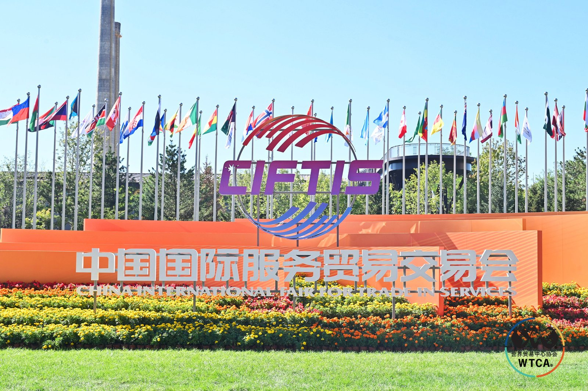
From September 9 to 13, the 2026 China International Fair for Trade in Services (CIFTIS), themed “Global Services, Shared Benefits,” was held at Shougang Park in Beijing. As the World Trade Centers Association (WTCA)’s only officially authorized member in Singapore, World Trade Center Singapore (WTC Singapore) participated in the event under the theme “Connecting Capital, Innovation and Global Markets.” Over the two days of September 10 and 11, one flagship brand event, two roundtable discussions, and one research report were successively delivered. From the “first stop” for companies going global to a “global ecosystem,” WTC Singapore brought its CIFTIS journey to a successful close through three high-level forums and four major events.
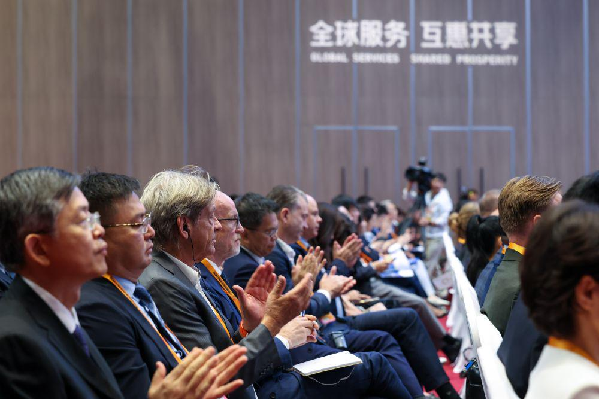
01 Multiple High-Profile Forums and Flagship Events Work in Tandem to Empower the Globalization of Chinese Companies
The 2026 China International Fair for Trade in Services brought together more than 1,830 exhibiting companies. For the first time, CIFTIS established a dedicated “Going Global” Zone, focusing on the practical needs of companies expanding across borders and providing a high-level platform for economic and trade engagement and the exchange of ideas among market players from China and overseas. As an important Asia-Pacific node in the WTCA global network, WTC Singapore actively participated in the CIFTIS program, taking part in three major industry forums and four themed activities in the WTCA exhibition area. Addressing key topics including multilateral trade, companies going global, AI empowerment, industrial globalization, and cross-border compliance, WTC Singapore gave full play to the resource advantages of the WTCA global network.
Within the external industry forum program, WTC Singapore participated extensively in three high-level forums, bringing practical perspectives from a global economic and trade standpoint. At the International Seminar on the Multilateral Trading System and the Development of Global Trade Networks, representatives of the organization shared practical experience in cross-border collaboration through the World Trade Center network, focusing on the development of the global trading system. WTC Singapore also appeared at the “Shared Trust, Shared Prosperity, Sailing Together” — 2026 China Enterprises Going Global Forum and Comprehensive Going Global Services Ecosystem Partners Conference, joining ecosystem partners from across sectors to discuss the opportunities and pathways for Chinese companies going global. At the 2026 China Enterprises International Compliance Forum, WTC Singapore focused on the risks faced by companies operating across borders and explored approaches to building compliance systems amid international expansion, providing practical reference for companies going global.
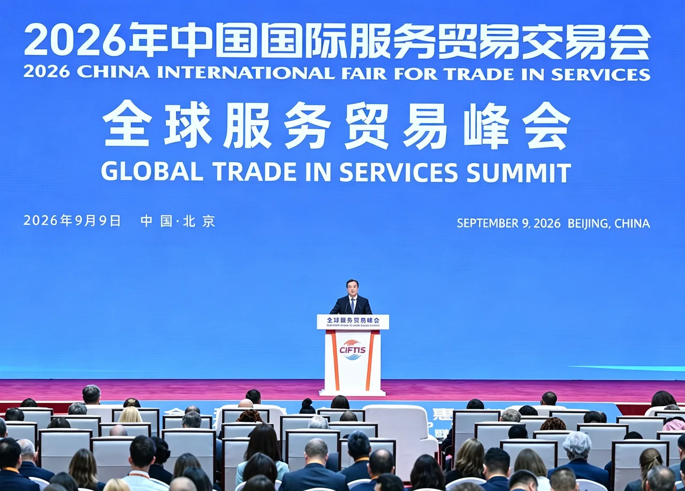
At the same time, WTC Singapore actively participated in four key activities in the WTCA flagship exhibition area, using a range of formats — including thematic presentations, roundtable discussions, and the release of major outcomes — to connect industry, capital, and global markets. At the “Rooted in Free Trade, Connected to the World” flagship brand event, WTC Singapore appeared alongside global free trade zone service partners and simultaneously announced two major international cooperation outcomes, highlighting new opportunities for cross-border collaboration under free trade frameworks. At the “Southeast Asia as a Hub: AI and Going Global Driving Business Growth” roundtable, participants explored how AI can empower Chinese companies to develop overseas markets, drawing on Singapore’s strategic value as a gateway to Southeast Asia. At the “Overseas Chinese Communities as a Bridge, the World Trade Center Network as a Global Gateway — Globalization Pathways and Ecosystem Development for the Life and Health Industry” roundtable, participants explored opportunities for collaboration among overseas Chinese community resources and the WTCA network in building an ecosystem for life and health companies going global. WTC Singapore also supported the global launch ceremony of the China New Energy Power and Electrical Equipment Going Global Research Report, providing perspectives and resource channels for the international expansion of the new energy industry from the standpoint of the global economic and trade network.
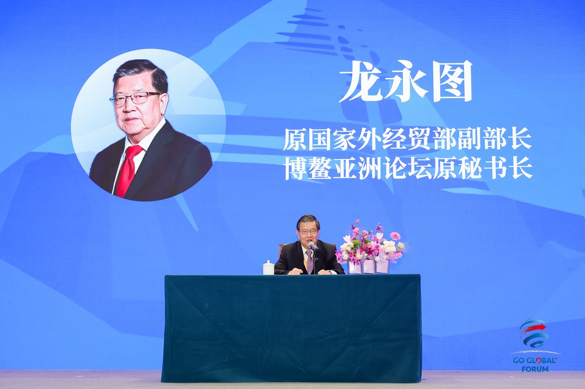
Through its forum discussions and flagship activities, WTC Singapore fully leveraged its role as an Asia-Pacific hub, demonstrating its capabilities in supporting Chinese companies going global and continuing to build a communication bridge connecting domestic industries with ASEAN and global markets.
02 September 11 | WTC Singapore Invited to Join the Global Ecosystem Partnership
At the “Shared Trust, Shared Prosperity, Sailing Together” — 2026 China Enterprises Going Global Forum and Comprehensive Going Global Services Ecosystem Partners Conference, Blake Zhang, Chairman of WTC Singapore and Chairman of Blake Capital, was invited to attend. Representing WTC Singapore, he completed the signing ceremony for the “Global Ecosystem Partner for Chinese Companies Going Global,” formally joining the comprehensive services ecosystem for companies going global and advancing the integration of the WTCA global business network into the service matrix supporting Chinese companies’ international expansion.
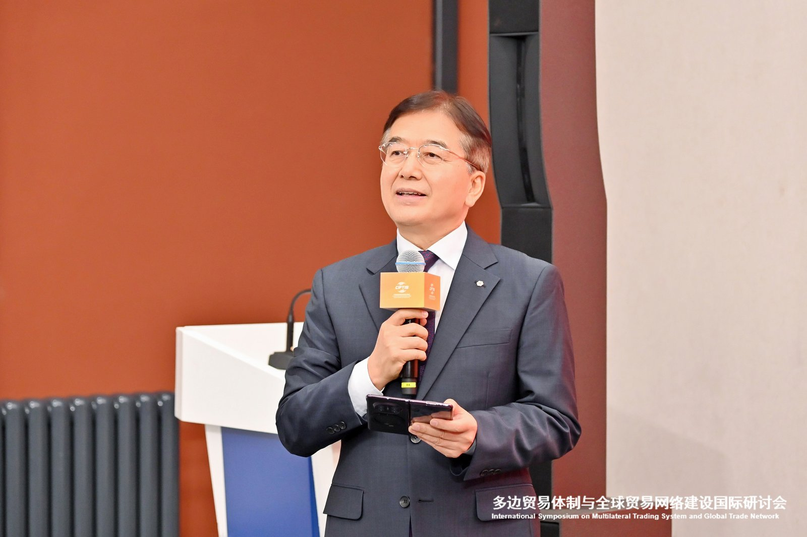
During the high-level dialogue on “Trends in the Global Expansion of Trade in Services Companies,” Blake Zhang shared his insights into the globalization of domestic trade in services companies. He noted that global trade is currently moving beyond the simple circulation of goods toward a new stage characterized by the deep integration of capital, innovation, and markets. For companies pursuing international expansion, the key is to rapidly establish broad and reliable overseas business connections. “Trust is fundamental. Rather than building an overseas network from scratch, it is better to connect one network with another,” Zhang emphasized. By leveraging the mature global collaboration network of the World Trade Centers Association, Chinese companies can efficiently establish channels into global markets while reducing the cost of exploring international markets.
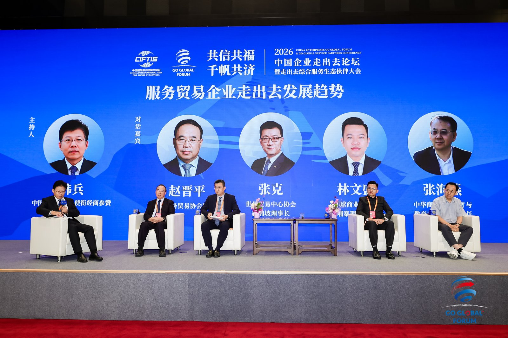
03 September 10 | Rooted in Free Trade, Connected to the World: Global Free Trade Zone Service Partners Make a Collective Appearance
On the afternoon of September 10, the “Rooted in Free Trade, Connected to the World” flagship brand event was held in the WTCA main exhibition area. The event was jointly organized by WTC Singapore, World Trade Centers in Jeju, Chongqing, and other locations, together with leading institutions from the Hainan Free Trade Port and Shanghai Free Trade Zone. It aimed to build an international platform for cross-regional economic and trade cooperation and resource matching. In her opening remarks, Zhu Xiaolan invited representatives from the business community to participate, saying: “When Chinese companies plan their global expansion, WTC Singapore is willing to become their ‘first stop’ for going global.”
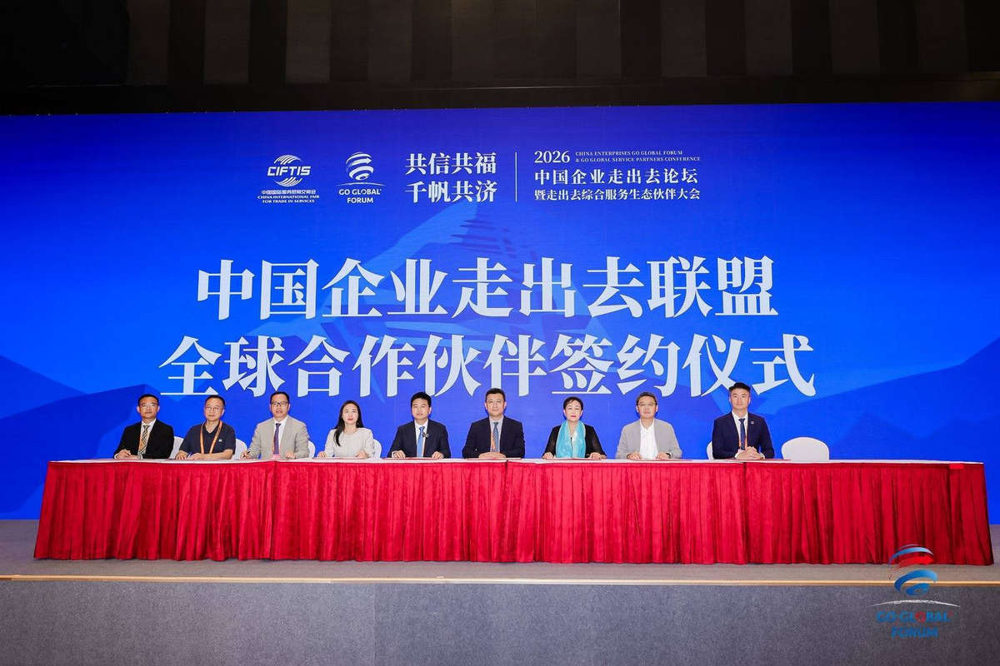
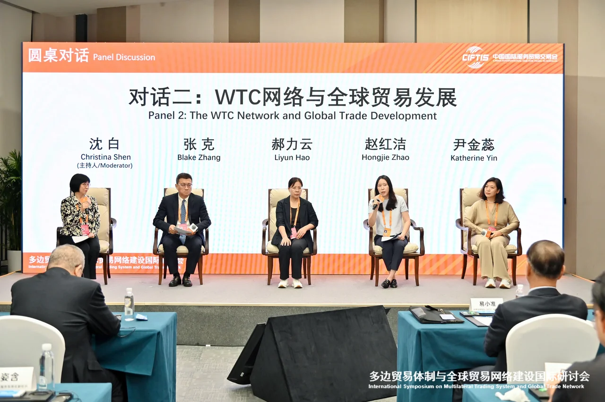
She noted that the WTCA network covers more than 95 countries and regions and more than 320 cities, connecting more than 750,000 affiliated companies, making it one of the world’s most influential business service platforms. Leveraging Singapore’s position as an ASEAN financial and trade hub, WTC Singapore will provide companies going global with one-stop services covering market entry, compliance, and localized operations through its three core business platforms — the WTC ONE Club international business club, the GlobalX global expansion accelerator, and the WTC Fund innovation capital ecosystem — opening up two-way channels between ASEAN and China.
On the same day, WTC Singapore announced two major outcomes. First, the “Global Free Trade Zone Health Industry Collaboration Mechanism” was officially launched, jointly initiated by Boao Lecheng International Medical Tourism Pilot Zone in Hainan, the Shanghai Free Trade Zone, and health service institutions from free trade zones around the world. The initiative will promote exchanges in medical technology, mutual referrals for health tourism, the sharing of industry resources, and mutual recognition of standards. Second, the APAC “First Overseas Store for Centenary Brands” was officially established in Sanya, Hainan. Leveraging the Hainan Free Trade Port’s duty-free policy for offshore island travelers and its positioning as an international tourism and consumption center, it will create a new platform for international century-old brands to enter the Chinese market for display and transactions.
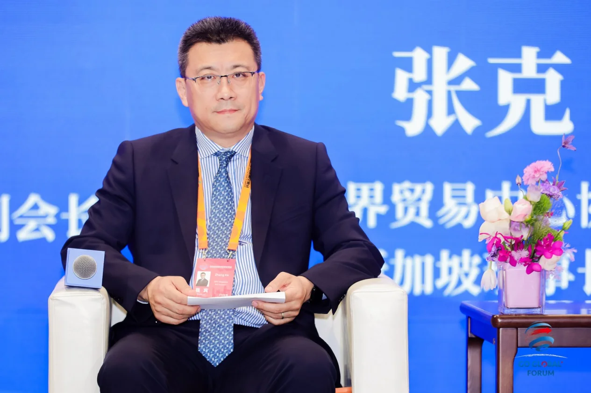
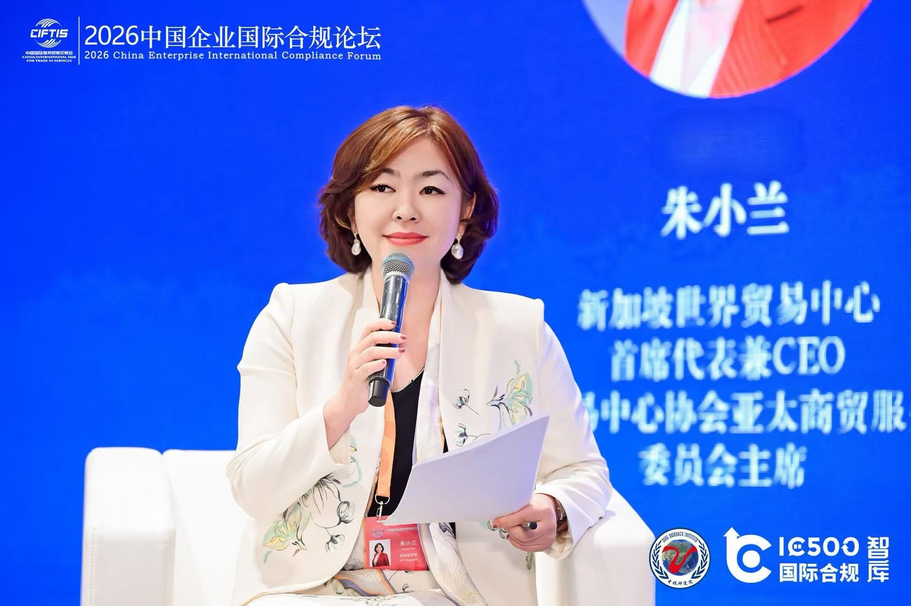
04 September 11 | Two Roundtables: AI and Life & Health, Focusing on How Chinese Companies Can Successfully Enter Overseas Markets
Two major roundtable discussions were held consecutively in the WTCA dedicated exhibition area, where Bruce Dong, Secretary-General and COO of WTC Singapore, led the discussions on AI-enabled global expansion and the globalization of the life and health industry. Guests from technology, finance, overseas institutions, overseas Chinese community organizations, industrial innovation, and other fields came together to create a multidimensional platform for the exchange of ideas.
At the roundtable on AI-driven global expansion with Southeast Asia as the hub, guests analyzed the practical challenges faced by Chinese companies entering Southeast Asian markets from different perspectives, including technology implementation, financial support, industrial collaboration, and overseas market practices. They explored the practical value of AI technology in cross-border business while also objectively pointing out that technology cannot replace the building of local business trust.
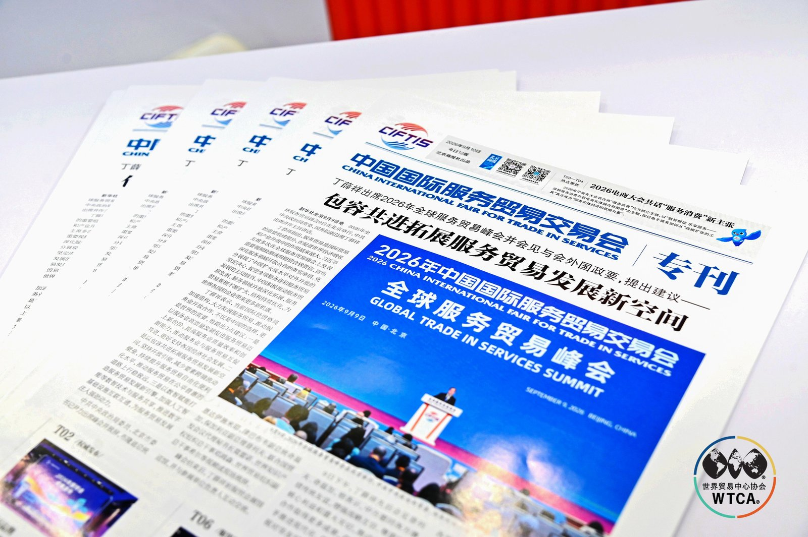
The life and health industry roundtable that followed brought together resources from overseas Chinese community organizations, overseas service networks, and representatives from industrial innovation and technology, focusing on the practical barriers faced by life and health companies going global. Participants reached a consensus that product strength is merely the entry ticket for going global. For the globalization of an industry, companies must also overcome multiple challenges, including regulatory access, trust in local markets, and long-term capital support. Only through ecosystem-wide collaboration among overseas Chinese community organizations, the World Trade Center network, and capital can channels for the overseas implementation of life and health businesses be opened up.
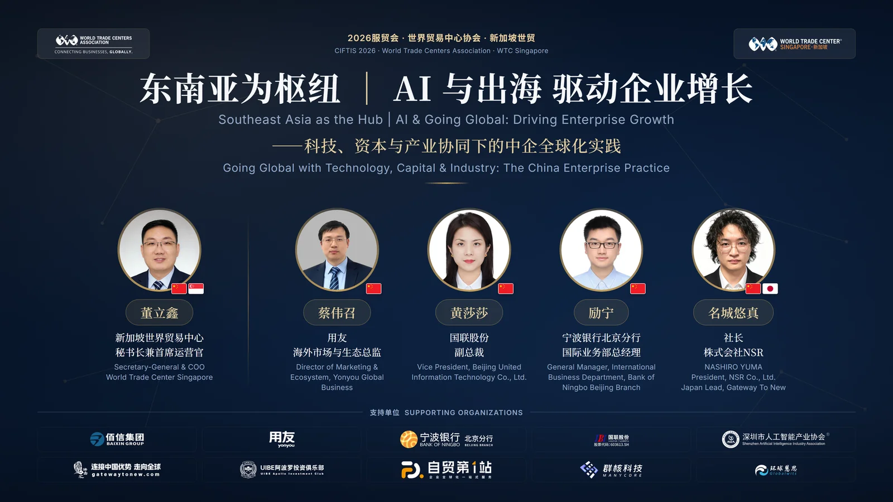
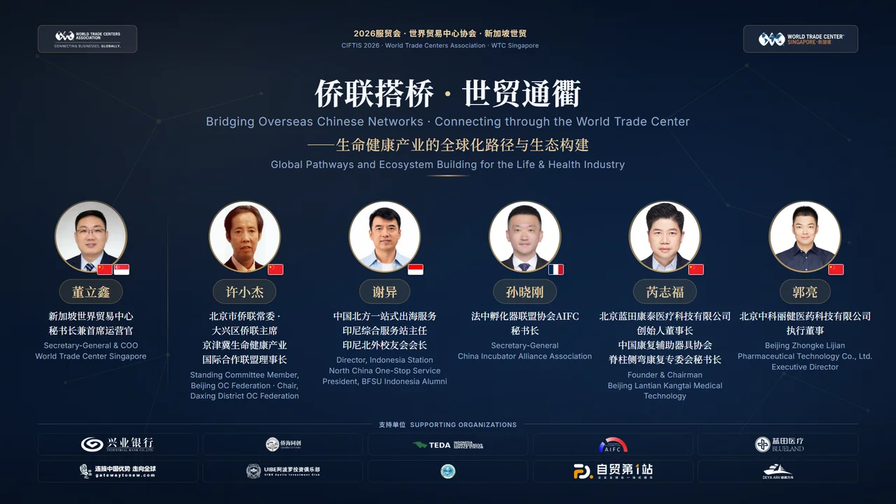
05 September 11 | China New Energy Power and Electrical Equipment Going Global Research Report Globally Launched
On the same day, the global launch ceremony of the China New Energy Power and Electrical Equipment Going Global Research Report was held in the WTCA dedicated exhibition area. The report was jointly released by WTC Singapore and the Power & Electrical Business Division of Hejun Consulting. Under the theme “From Product Export to Global Ecosystem,” the report presents a systematic study of the pathways, market landscape, and trends associated with the globalization of China’s new energy power and electrical equipment industry.
The report points out that entering overseas markets with products is only the starting point for international operations. Moving from “products going global” to “capabilities going global” and then to “ecosystems going global,” companies need to progressively transform from export-oriented business operations toward globalized management. The core of international competition is shifting from single-product capabilities toward comprehensive operating capabilities. This joint release represents a combination of industry research and international networks: on the one hand, it examines the practices and trends in the international development of Chinese new energy power and electrical equipment companies from an industry perspective; on the other hand, through the WTCA global network, it strengthens information and resource connections between Chinese companies, overseas markets, and industry partners, providing decision-making reference for companies to calibrate their internationalization strategies and unlock incremental market opportunities.

06 The Closing Is Not the End: After the “First Stop,” Global Connections Are Just Beginning
From the collective appearance of global free trade zone partners on September 10 to the two roundtable discussions and the launch of the research report on September 11, WTC Singapore completed a full expression of its participation in this year’s CIFTIS, moving from “brand presence” to “outcomes delivered” at a high frequency and intensive pace. Behind the four events was the same underlying logic: with the WTCA global network as the foundation and capital, trust, and channels as the supporting pillars, WTC Singapore is creating broader space for Chinese companies to “bring in” and “go global.”
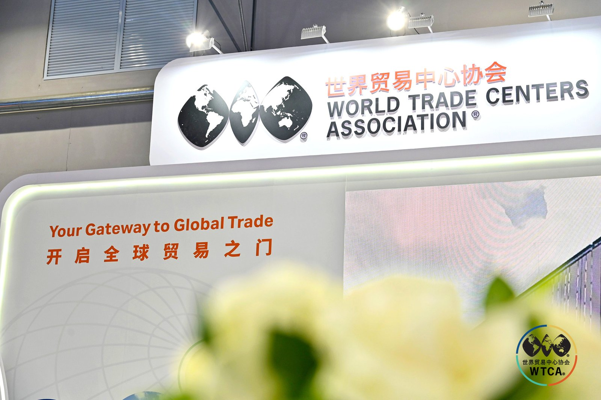
The “first stop” for going global is now in place. The journey of connecting with the world is only just beginning. At the next stop, WTC Singapore will be with you.
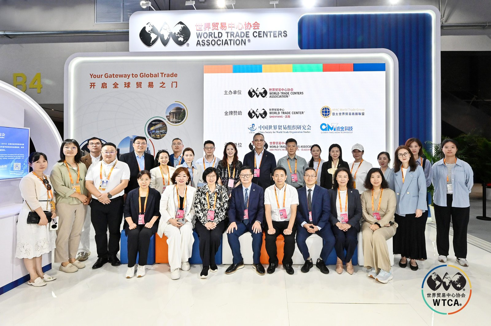
07 About WTC Singapore
About the World Trade Centers Association (WTCA): Founded in 1970, the World Trade Centers Association (WTCA) is a non-profit, non-political global business organization headquartered in New York, USA. Its network covers nearly 100 countries and regions and more than 300 World Trade Centers worldwide. It is committed to promoting international trade and investment cooperation and providing businesses with network support to establish cross-border business connections and expand into international markets.
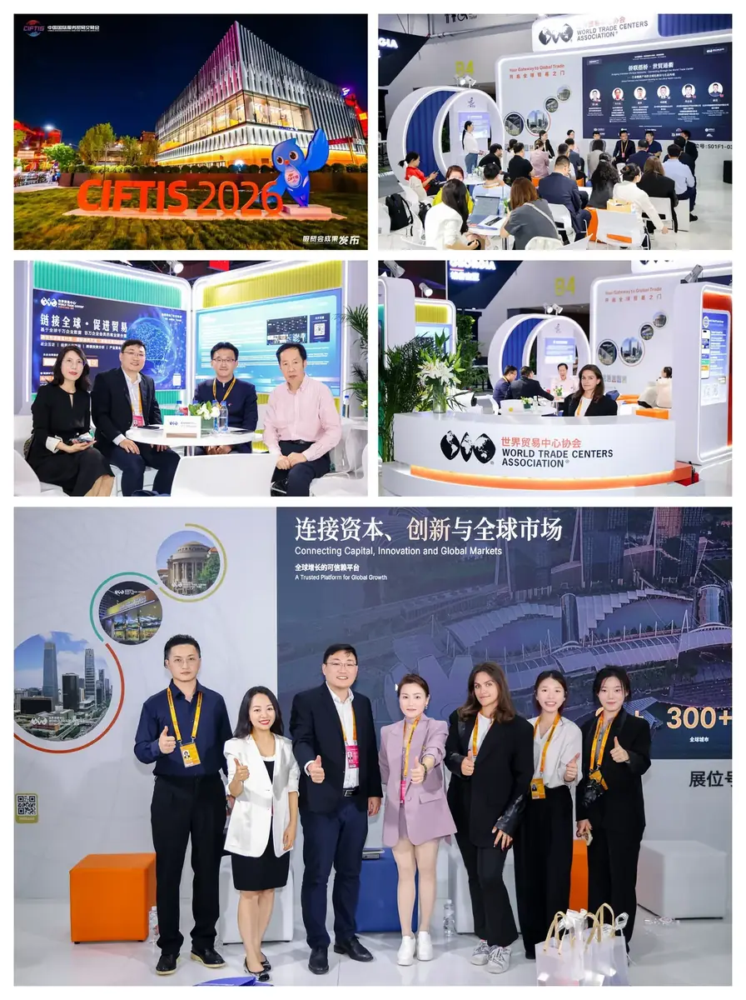
About World Trade Center Singapore (WTC Singapore): World Trade Center Singapore is the officially authorized WTCA member in Singapore. Through its three core business platforms — WTC ONE Club, GlobalX, and WTC Fund — WTC Singapore is dedicated to connecting global capital, innovation resources, and market opportunities, providing businesses with cross-border resource matching and support for global expansion and localization.